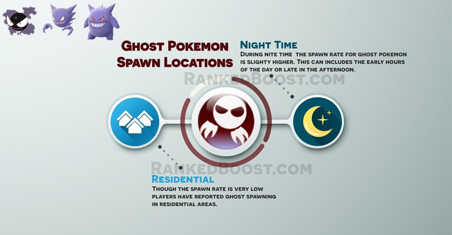

Where Do I Catch Ghost Pokemon In Pokemon Go: Ghost pokemon spawn around churches on occasion. Players are reporting ghost pokemon spawning in residential areas and with higher spawn rate during night time/afternoon/early morning. (Note: Players are reporting the lack of ghost Pokemon in cemeteries and graveyards.)
Where Do I Find Ghost Pokemon? – ( Ghost Pokemon Locations )
Confirmed Ghost Pokemon Go Spawn Locations: Churches – Residential Areas ( Slightly Higher Spawn Rate During Night Time/After Noon/Early Morning )
Unconfirmed Ghost Pokemon Go Spawn Locations: Cemeteries – Graveyards
There is a Total of 8 Pokemon Go Ghost Pokemon: Gastly, Haunter and Gengar.
